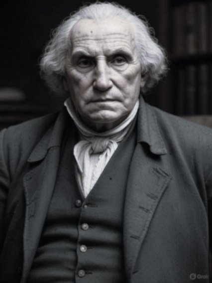
George Dawson Coleman did; and no, this isn't a photo of George Washington wishing for better dentures. It's an AI-rendering of pretender Robert Spring, a 19th-century book dealer who routinely forged Washington's signature to swindle collectors.
A faked photo only seems fair — with no known images of Spring, this modern rendering befits a man whose scams duped many. Among his marks—or benefactors—was Lebanon, Pennsylvania's George Dawson Coleman. Was Coleman deceived by Spring's cunning, or did his aid arise from profound Christian charity?
The question haunts: did Coleman know Spring's criminal past, and if so, why trust a known forger? Read on.
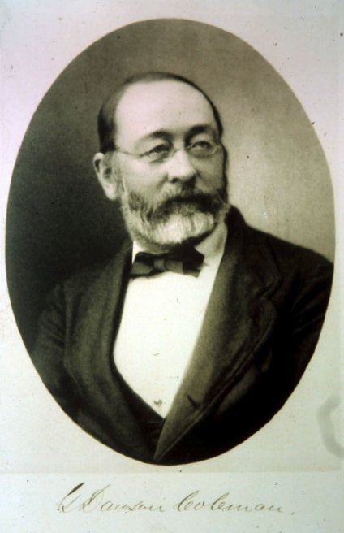
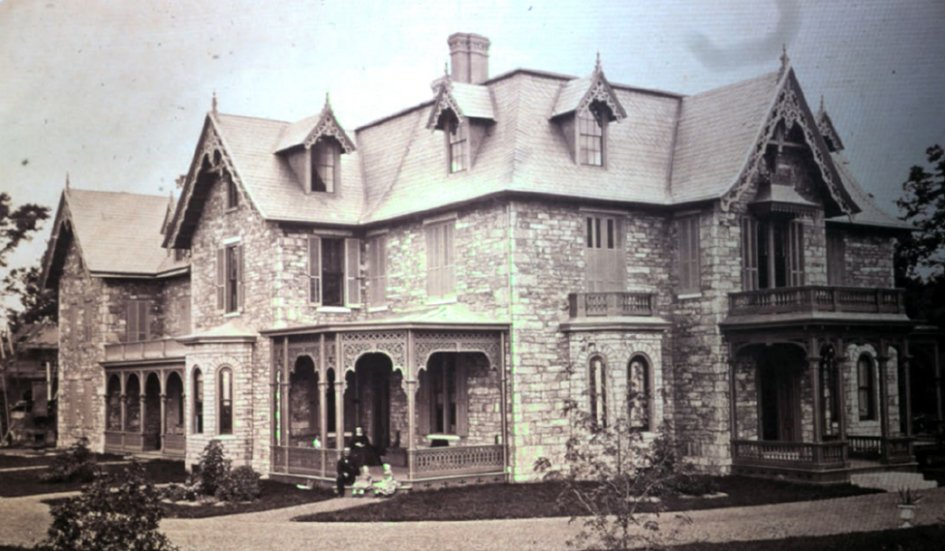
This tale is another installment in summertime reading of the "Who Knew?" series exploring George Dawson Coleman (1825–1878), Lebanon's iron master raised at Elizabeth Furnace near Brickerville. His wealth from the North Lebanon furnaces and namesake Coleman Memorial Park marked his prominence. His story intertwines with Robert Spring, a bookseller whose forgeries brought riches and ruin, until Coleman's benevolence offered a lifeline—or a trap.
An Innocent Beginning
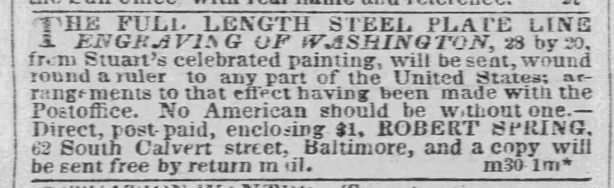
British émigré Robert Spring (1813–1876) arrived in America in the 1850s, setting up trade as a reputable bookseller in Baltimore and then Philadelphia.
It began honestly; he purchased a collection of books that had belonged to George Washington and sold them at a premium to an appreciative collector.
News spread of his successful transaction. Tempted, he turned rogue. He began offering his slower-moving inventory by assuring buyers that these had come from Washington's library.
He then discovered that signing the names of Washington and others inside the covers of his rare books made them even more desirable and valuable.
One success led to another. He forged other well-known signatures, then moved on to fabricating documents and letters using his blend of "antique" ink. He wrote on the blank liners cut from old books or aged the paper with stains.
In one famous forgery he signed Washington's name to a 1796 check for $306.17 drawn from a Baltimore account.
His first arrest came in 1858 in Philadelphia for receiving money under false pretenses, only to escape by fleeing to Canada.
Selling his forgeries abroad kept him safe from discovery, using newspaper advertisements and mail under the alias of Dr. James Hawley.
He also posed as the fictitious daughter of Stonewall Jackson. In this scam he appealed to sympathizers of the Confederate states in England and Canada. Spring forged "Jackson's" letters and documents, selling them to raise money for this "impoverished maiden."
But that caught up with him in 1869 when arrested for mail fraud. He went on trial in Philadelphia in early 1870, confessed and went to prison.
He would die in a Philadelphia charity hospital in 1876. His forgeries, ironically, remain collectible in recent years. In some cases modern fraudsters sell them as genuine, while honest brokers market them as curiosities.
Rather than re-tell all of Spring's colorful story as found readily on-line, presented here is a particular and original, first-hand account of the last years of his life. It is possible that history's negative view of Spring needs an update.
Robert Spring Meets George Dawson Coleman
In 1871 after his second imprisonment, Robert Spring, living on Philadelphia's South 22nd Street with his wife and children, appears to seek redemption. He needed capital to get back on his feet and to support his family.
Enter George Dawson Coleman, Lebanon's wealthy iron master who frequented Philadelphia, owning a mansion in its northwest part of the city.
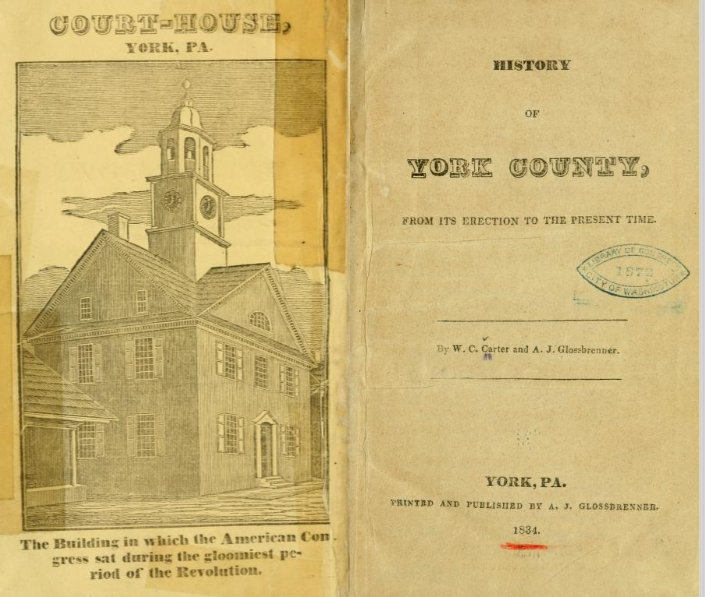
How they met is not known. As a book collector, perhaps Coleman visited Spring's shop seeking additions to his mansion's library. Or, had Spring found a mark and set his sights on Coleman? Nonetheless, twenty letters from Spring to Coleman over an eight-month period in 1871–72 set the stage of a mystery.
In the first letter we learn they had already met and that Coleman rendered financial assistance. We ought not be surprised, as Coleman and his family are known for their charitable generosity to many, even to Mary Todd Lincoln a few years prior.
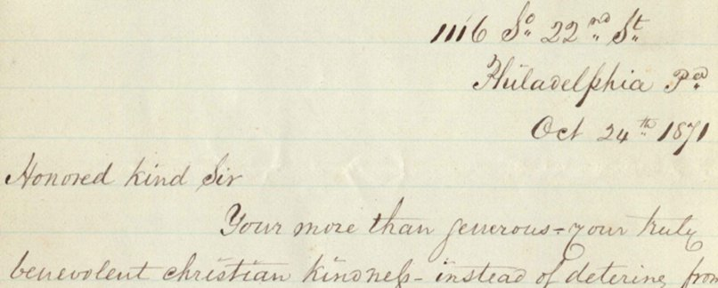
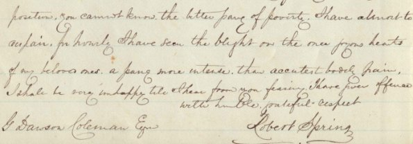
Late in October 1871, Spring writes, "Honored kind Sir, your more than generous… benevolent Christian kindness" has saved his family. He references Coleman's aid to "thousands of the West," likely the 100,000 displaced earlier that month by the Chicago Fire (October 8–10, 1871), a disaster that prompted nationwide relief efforts. Coleman's wealth and connections to President Grant suggest he contributed funds, aligning with his family's well-known philanthropy.
In his letters Spring admits his "downward path," and laments his valuable book collections lost years ago. He tells of recently losing $12,000, a "pittance" compared to the strength of his business in prior years.
He requests "a mere trifle" to travel to New York and Boston on a book-buying expedition, promising Coleman first pick of rare finds.
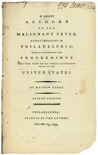
He also intends to travel to the "old Quaker villages" around Mullica Hill, New Jersey, searching in attics for old books and pamphlets from the previous century. Enclosing his pawn tickets to prove his desperation, Spring secures an additional $300 from Coleman.
By November, he makes good, sending twenty books via Adams Express, valued at $118.50 (over the course of this relationship it seems that Coleman contributed far more than the value received in books).
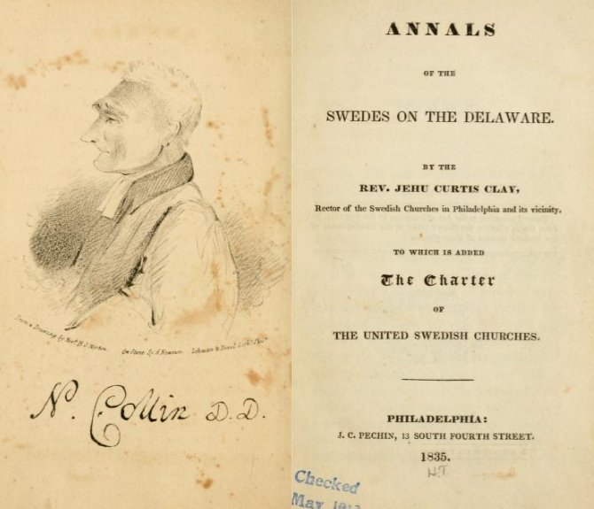
That Coleman seems a discerning collector is evidenced by declining a 1794 Stedman's "History of the American War." He penciled in the margin of the letter, "I have."
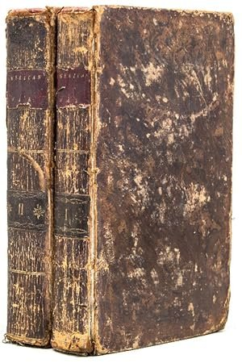
In December, Coleman again sends a $200 check, reissued when the first went missing (a reason for suspicion?), and yet books are received.
Sincerity … or Scam?
In today's digital age, rare book collectors and dealers are as scarce as their treasures (ironically, most of the books Spring offered to Coleman are freely available today online in digital form).
What is familiar to us, however, are the many scams perpetrated online by faceless thieves and scoundrels. We cannot but wonder and watch in horror: was Coleman being led on by Robert Spring's deception?
On one hand, Spring prostrated himself, pleading for mercy and profuse in his gratitude for Coleman's kindness.
He did good by sending books on approval, giving Coleman first right of refusal, and claiming to discount the prices he was charging, in gratitude for the trust and kindness extended to himself.
If a scam, it was not once-and-gone, but a drawn-out ruse. Was Spring leading Coleman along, building up to the ultimate deception?
In December there are four more letters in which Spring reports his activities, and no fewer than sixty books are shipped. Such books had to be genuine, as most of them at 500 pages each would not be forgeries.
Yet that same month, Spring made news in Philadelphia. One of his George Washington forgeries was discovered hanging in Independence Hall!
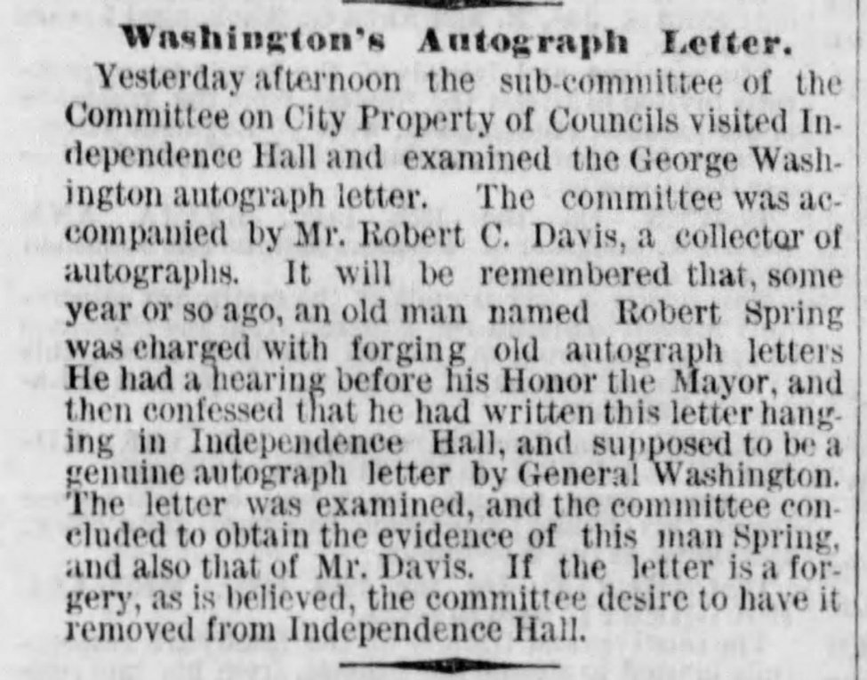
Spring confessed to that deception. We wonder again: could Coleman not be aware of Spring's criminal exploits?
What led him to choose compassion over caution? Was Coleman such an astute businessman that he trusted his own instincts and shrewdness in dealing with Spring, while building his personal library?
Insights From Letters
Perhaps what made Robert Spring successful in putting his clients at ease was his self-assured British charm. Or it may have been his obsequious flattery, acknowledging the "downward path" he had been on.
In one letter he assured Coleman of his long experience and expertise as a judge of rare books. In another he pled sympathy for his own poor health and his destitute family. He always appeals to Coleman's high position, that a "mere trifle" would get him back on his feet; Spring's goal being to have enough to rent a storefront and stock it with books that he might make an honest living.
Coleman's Compassion — A Possible Explanation
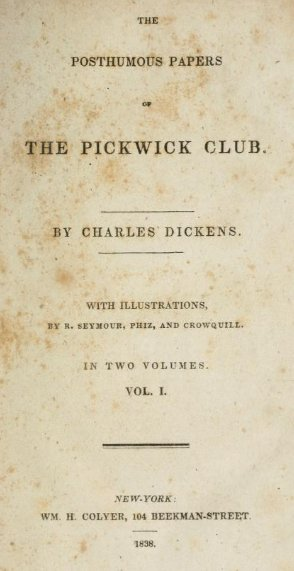
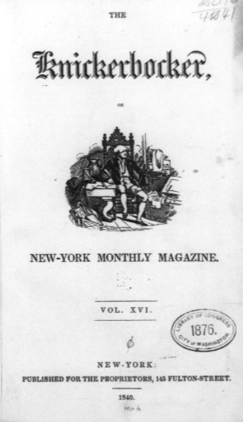
Twenty-four-year-old Charles Dickens got his start publishing a series of humorous stories, The Posthumous Papers of the Pickwick Club, between April 1836 and November 1837. The series (later becoming his first novel, "The Pickwick Papers") spread from England to the United States by 1838, at which time George Dawson Coleman (age 13) was likely enjoying and impressed by periodicals like Knickerbocker Magazine.
A few years later Dickens toured the country; both his work and copycat spinoffs became a cultural phenomenon. Very likely the affluent Coleman family, including young George, was affected by Dickens's social commentary.
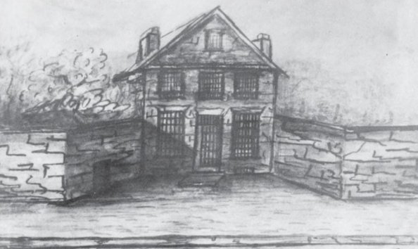
One installment of Dickens's serial story tells of a man named Heyling whose mistakes landed him in debtors' prison. Already destitute, he is unable to support his family and soon loses them. His wife moved to a ramshackle apartment near the jail to be close to him. They watched their young son grow sick and die. She also dies in his arms while visiting the prison, the tragedy destroying him beyond what indebtedness could touch. No one had come to their rescue; worst of all, her own father had banished him to prison, doing nothing to support them and leaving them to perish.
The panic of 1819 had caused a rise in insolvency and heightened public social conscience for the injustice of debtor prisons. It was not until the mid-19th century that most states had abolished the practice of imprisonment for debt.
Parental Influence
And if it was not a young Charles Dickens that influenced George, certainly the example of his parents and grandfather Robert Coleman had schooled him well. Robert had shown benevolence first to glassmaker "Baron" Henry Stiegel, who fell from great social heights, going to prison, and losing everything in a sheriff's sale.
And there would be memories of how Robert Coleman had lent assistance to fellow iron master Mark Bird when he had been bankrupted by Congress following the Revolutionary War.
Of course it was not debt but crime that earned Robert Spring imprisonment. But prison ruined him, leaving him severely indebted in the 1870s. It remains that he had a wife and children to support.
Recognizing his Christian duty, successful and aging George Dawson Coleman had compassion for a man twelve years his senior. Further compelling would be his wife Deborah Coleman, who felt sympathy for what Mrs. Spring must be suffering.
An Uncertain Ending
The last letter, in May 1872, leaves the story unfinished; we don't know the end of the mystery.
In the letter, Robert Spring has shipped yet more books by Adams Express. He expresses dismay at not finding enough, nor more rare volumes for his benefactor. He assures Coleman that these volumes of American history are among the "most difficult to obtain."
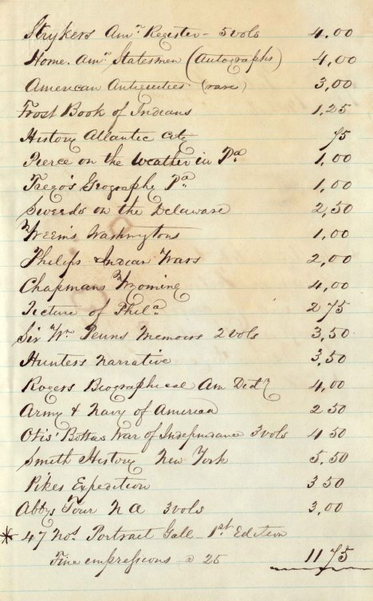
We don't know if there were more letters or how long the relationship continued. Coleman died in 1878, having only six more years to enjoy his treasures.
Questions remain: was Coleman content with his book collection? What happened to them after his passing in 1878? Several of them appear among Mrs. Coleman's "Profound Possessions," including the "History of York" (1834) as was shown above in this story. Were the books still in the mansion when it was demolished in 1961?
Did Spring stay on the path of responsibility? He died about four years later, a resident of Philadelphia, and a poor man.
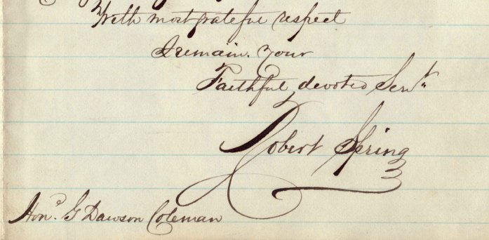
Spring closes his letter: "I can never forget your goodness to me. God bless you for it. My store is now paying and I feel easier in mind than I have for many years — to your generous goodness I owe it. With most grateful respect, I remain your Faithful, devoted Servant, Robert Spring."
Redemption?
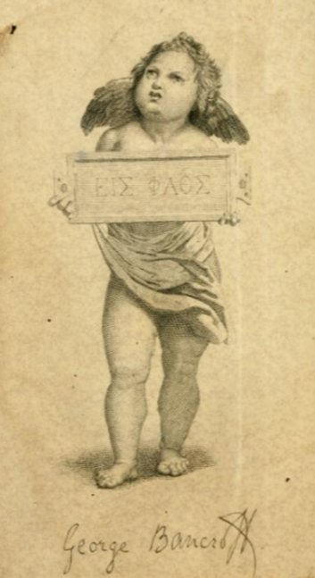
Craig Coleman and the Cornwall Iron Furnace, for ongoing support of historical research.
Book images in the story are from those offered by Spring to Coleman, found on the internet. The "Profound Possessions" story referenced above was itself the second of what has grown into a series of over forty installments, begun three years earlier.
For summer reading, the author suggests searching Archive.org and Books.Google.com for the old volumes mentioned above.
Originally published on LebTown, July 31, 2025.